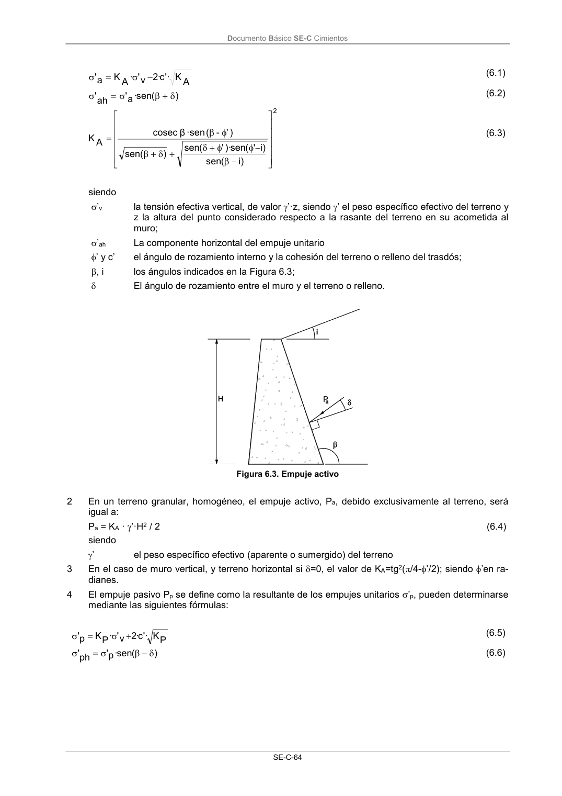

DB-SE-C Cimientos · edición 2019-12-20 · capa oficial
Documento DB-SE-C-oficial · SHA-256 del PDF a71133f4b0dca253e45ea3071c70f2a512354bcc5cd841bf89b1a502f567ac5e
Página física 69 de 165.
Copia fiel del PDF fuente · Fuente oficial
Ficha de la disposición en la fuente oficial
Formato: Texto de la página (Markdown)
Documento Básico SE-C Cimientos
SE-C-64
A
K
'·
c·
2
v'
·
A
K
a
'
(6.1)
)
(
sen
·
a
'
ah
'
(6.2)
2
)i
(
sen
)i
'
(
sen
)·
'
(
sen
)
sen(
)'
-
(
·sen
β
cosec
A
K
(6.3)
siendo
’v
la tensión efectiva vertical, de valor ’·z, siendo ’ el peso específico efectivo del terreno y
z la altura del punto considerado respecto a la rasante del terreno en su acometida al
muro;
’ah
La componente horizontal del empuje unitario
’ y c’
el ángulo de rozamiento interno y la cohesión del terreno o relleno del trasdós;
, i
los ángulos indicados en la Figura 6.3;
El ángulo de rozamiento entre el muro y el terreno o relleno.
Figura 6.3. Empuje activo
2
En un terreno granular, homogéneo, el empuje activo, Pa, debido exclusivamente al terreno, será
igual a:
Pa = KA · ’·H2 / 2
(6.4)
siendo
’
el peso específico efectivo (aparente o sumergido) del terreno
3
En el caso de muro vertical, y terreno horizontal si =0, el valor de KA=tg2(/4-’/2); siendo ’en ra-
dianes.
4
El empuje pasivo Pp se define como la resultante de los empujes unitarios ’p, pueden determinarse
mediante las siguientes fórmulas:
P
K
'·
c·
2
v'
·
P
K
p'
(6.5)
)
(
sen
·
p'
ph
'
(6.6)
